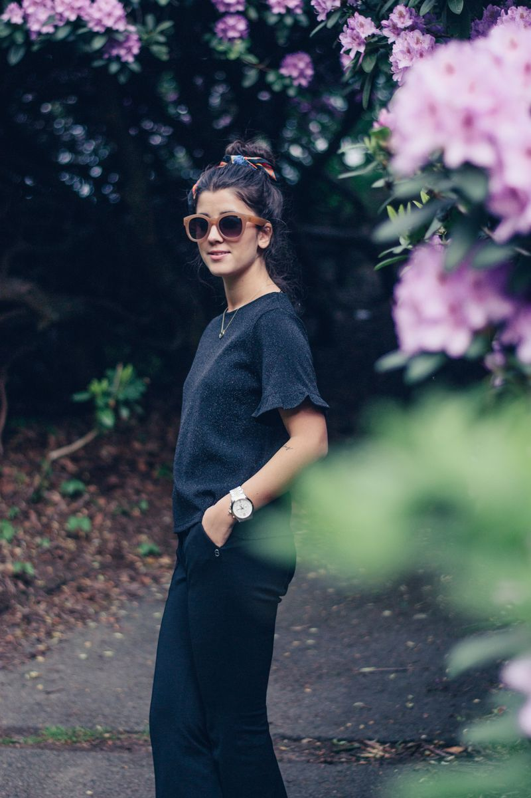
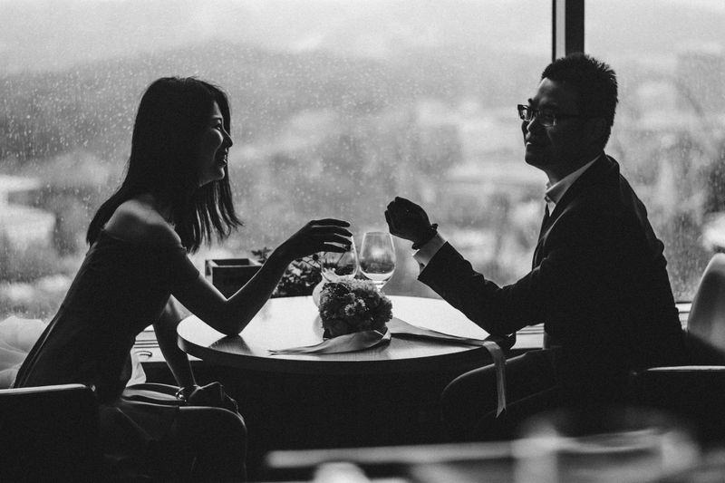
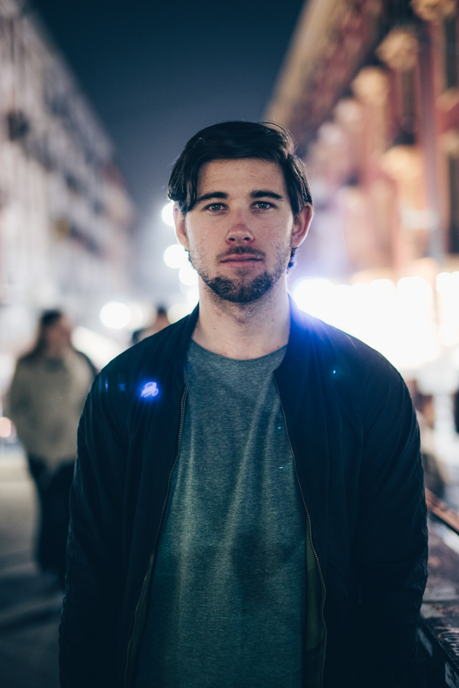

People
I love to take portrait photos. It is one of my favorite type of photos to shoot. I love it when you get the perfect shot, you catch the feeling and can almost see their soul through their eyes! All of my portraits are taken just for fun. I have a few friends who loves to have some nice updated photos of their selfes. The picture of Zhou Yu and Yu Jie are a pre-wedding photo session I did for them, and the other photos are just portraits of friends.
Monochromic smile. Melina 2017.
In the garden. Filippa 2016.
Fine dining. Zhou Yu & Yu Jie 2017.
Backlight. Oscar 2018.